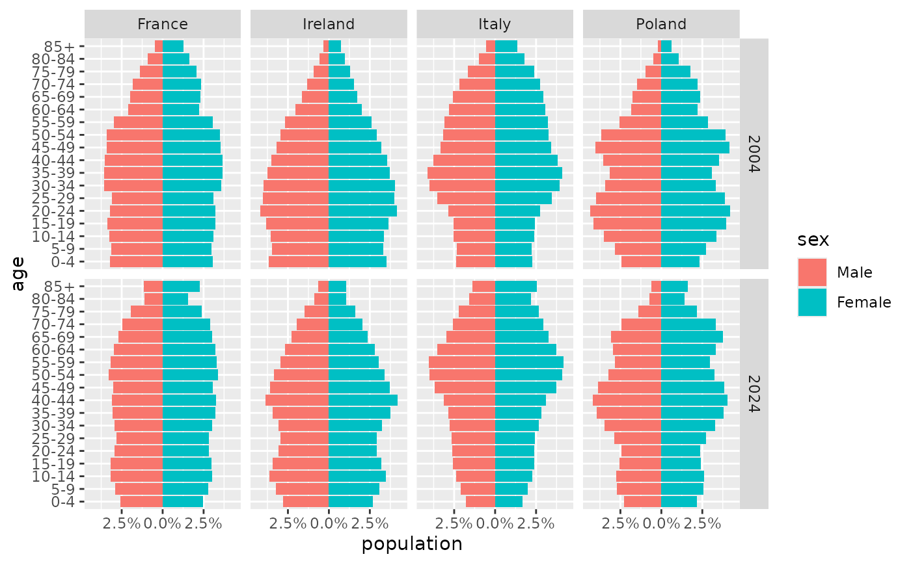

The population on 1 January 2004 and 2024 of France, Ireland, Italy and Poland, by five-year age group and sex, from Eurostat. It is included for examples and has the shape most population data come in: one row per country, year, age group and sex.
Format
A data frame with 288 rows and 5 columns:
- country
Country, a factor.
- year
Year of the population count, 2004 or 2024.
- age
Age group, a factor from
"0-4"to"85+"in ascending order.- sex
Sex, a factor with levels
"Male"and"Female".- population
Number of people.
Source
Eurostat, "Population on 1 January by age group and sex"
(demo_pjangroup),
https://ec.europa.eu/eurostat/databrowser/view/demo_pjangroup,
retrieved 25 October 2026 and reused under the Creative Commons
Attribution 4.0 licence. Some 2024 figures are provisional.
Examples
library(ggplot2)
ggplot(europe_pop, aes(x = population, y = age, fill = sex)) +
geom_pyramid(denominator = "total") +
scale_x_continuous(labels = scales::label_percent()) +
coord_pyramid() +
facet_grid(year ~ country)
